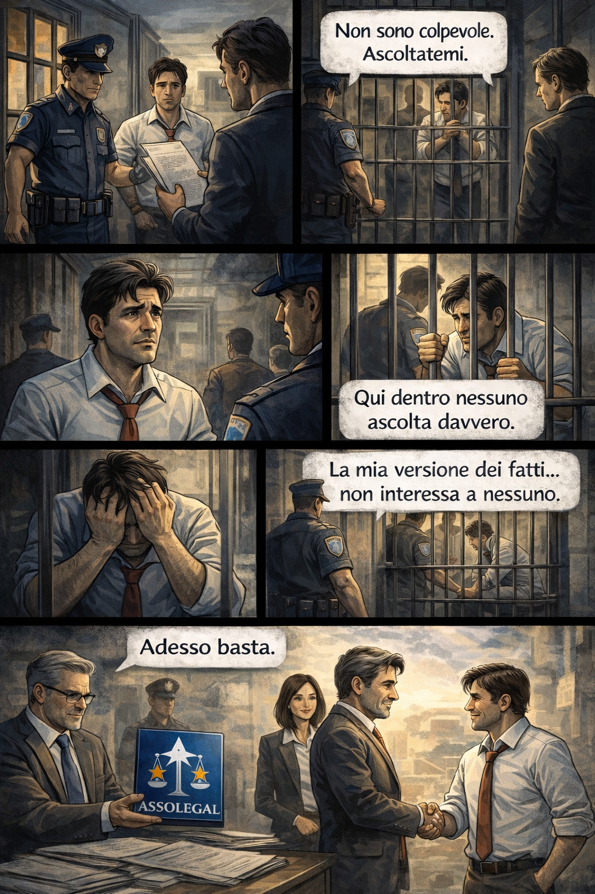
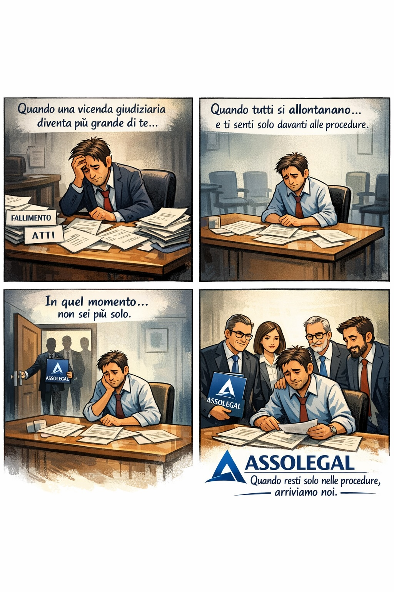
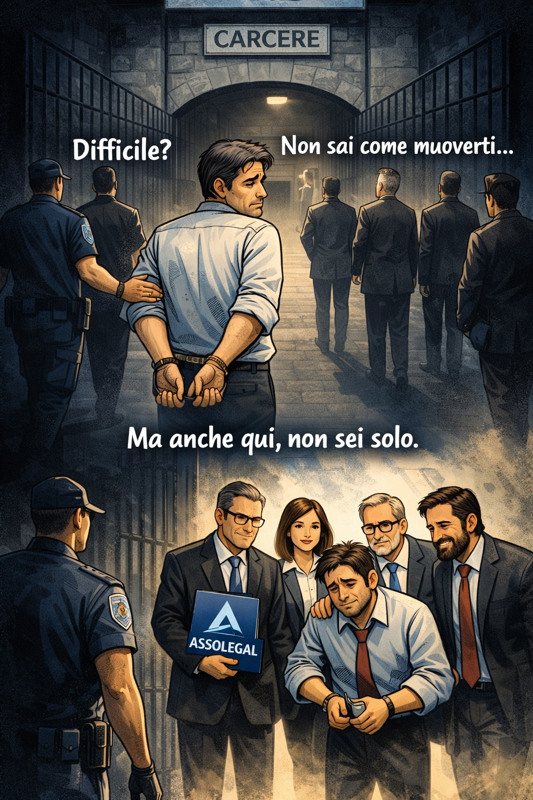
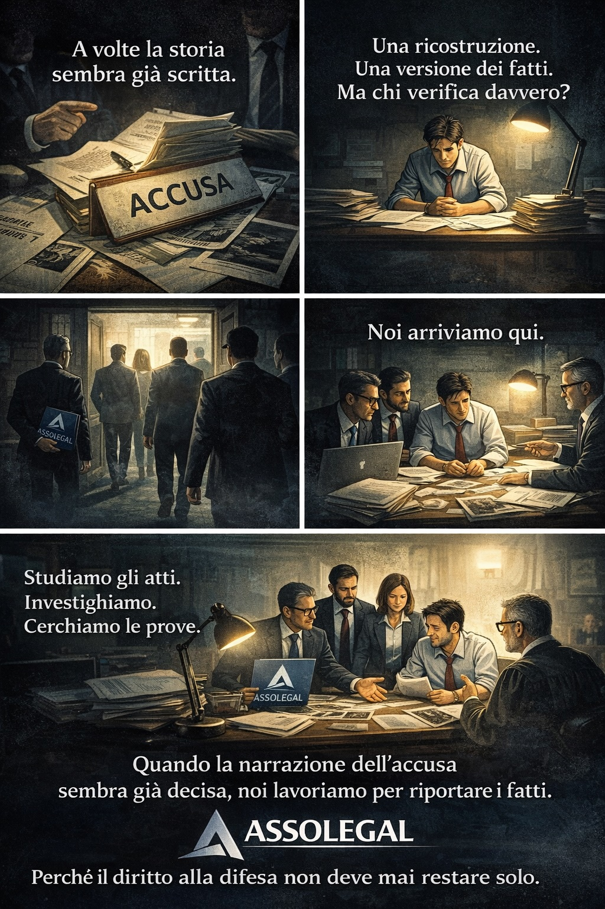
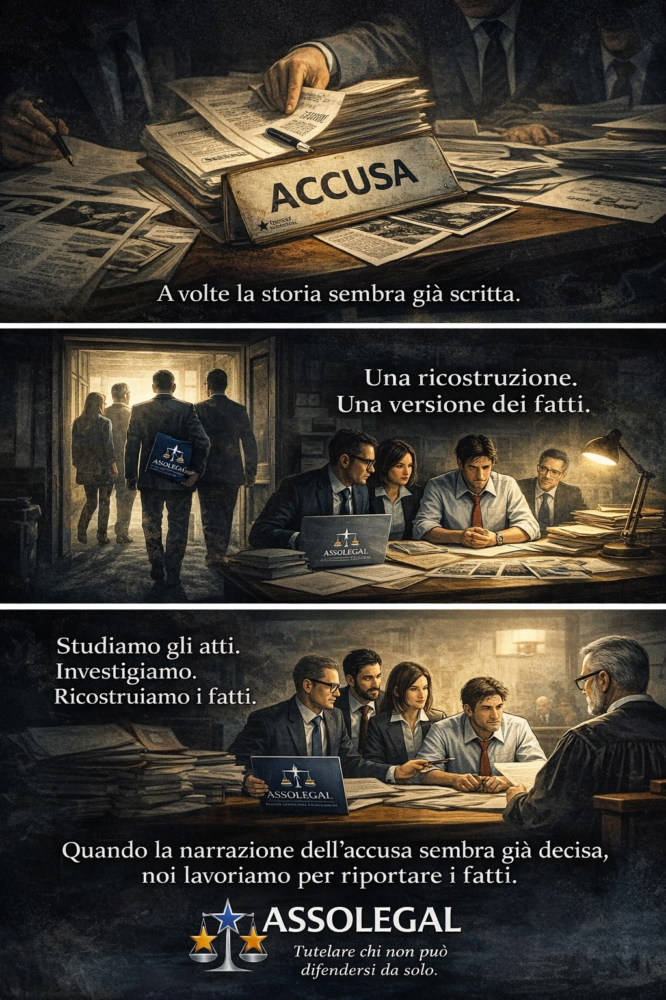
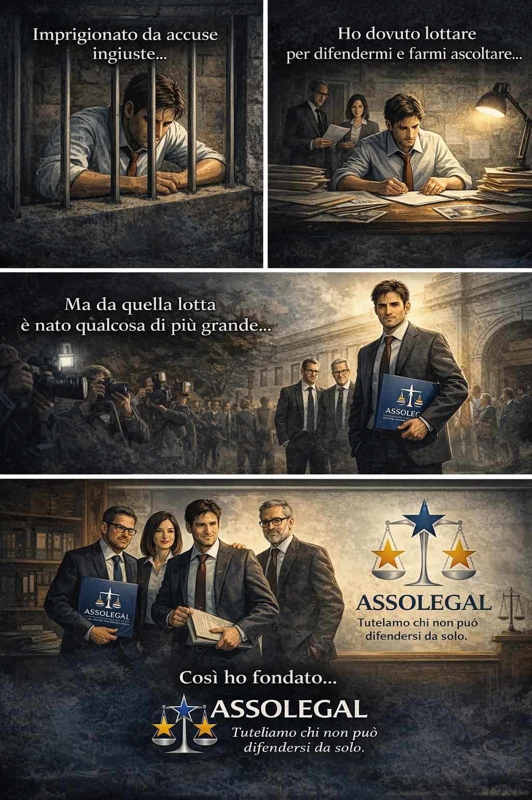

Studio degli atti
Analisi documentale, lettura integrata dei fascicoli, verifica delle ricostruzioni e attenzione alle omissioni che possono alterare il quadro reale.
Un progetto associativo pensato per affiancare chi si trova dentro procedure complesse, contenziosi delicati e ricostruzioni dei fatti spesso parziali. AssoLegal nasce per dare metodo, studio, presenza e supporto tecnico-giuridico a chi rischia di restare solo.
È la solitudine, la confusione, il non essere ascoltati.

C'è un momento in cui serve qualcuno che entri davvero nella tua situazione. Non per giudicare. Per capire.
AssoLegal nasce per questo.
Parla con noiAssoLegal è una realtà associativa orientata allo studio, alla cultura giuridica e al supporto tecnico nelle situazioni in cui il diritto alla difesa rischia di essere soffocato dalla complessità delle procedure. L’obiettivo è offrire un luogo serio di confronto, approfondimento e affiancamento.
Analisi documentale, lettura integrata dei fascicoli, verifica delle ricostruzioni e attenzione alle omissioni che possono alterare il quadro reale.
Approfondimento dei profili bancari, contabili, procedurali e probatori che spesso fanno la differenza nelle procedure concorsuali e nei contenziosi collegati.
AssoLegal promuove una visione concreta del diritto di difesa: non solo forma, ma presenza, confronto, metodo e capacità di riportare i fatti al centro.
Il taglio del progetto è pratico. Non una vetrina astratta, ma un punto di riferimento per chi ha bisogno di capire, ordinare, contestare, ricostruire e difendersi con serietà.
Lettura critica di atti, relazioni, passivi, ricostruzioni patrimoniali e flussi, con particolare attenzione alle anomalie documentali.
Condivisione di strumenti, orientamento, confronto e iniziative culturali per non lasciare il singolo isolato davanti alla procedura.
Studio di temi processuali, tecnici e difensivi, anche in collegamento con situazioni penali, civili e fallimentari tra loro connesse.
Ci sono momenti in cui tutto sembra già deciso. Arrivano atti, accuse, provvedimenti. E tu resti lì, a cercare di capire cosa sta succedendo davvero.
Il problema non è solo tecnico. È sentirsi soli, non ascoltati, dentro qualcosa che ti supera.
AssoLegal nasce per questo: entrare nella situazione, ricostruire i fatti, affiancarti davvero. Perché ogni storia merita di essere compresa, non semplicemente decisa.
Se ti ritrovi in queste situazioni, parlane con noi.





Quota annuale. Il tesseramento sostiene le attività associative, i momenti di studio, le iniziative culturali e lo sviluppo del progetto AssoLegal.
Il sito è già impostato in modo che tu possa poi aggiungere un pulsante per domanda di adesione, modulo online oppure pagamento con bonifico.
Raccontaci la tua situazione. Ti ricontatteremo con metodo e riservatezza.